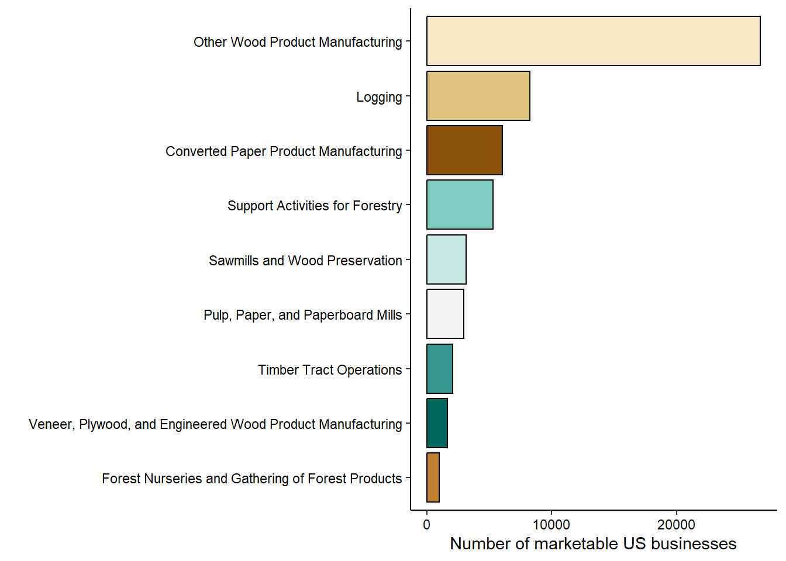

To understand any industry, an analyst should be well acquainted with the codes designating the North American Industry Classification Systems. These NAICS codes are often used along with economic data to analyze an industry or sector. When a new business is created, they self-select into one or more NAICS codes.
In forestry, there are several designations that represent different areas of the forest products industry. These range from wood products manufacturers, loggers, pulp mills, and forest nurseries. NAICS codes have been used extensively in several analyses of the forestry industry, including:
- Understanding how many jobs were lost in the forestry sector as a result of the Great Recession,
- Understanding foreign direct investments between the US and Canada within the forest products sector, and
- Determining heat-related illnesses in the forestry sector in Washington.
Using data from the NAICS website, the following graph shows the number of existing marketable businesses according to their NAICS industry category:
The names of the specific NAICS codes appear below along with the number of businesses. Businesses conducting millwork, logging, and support activities for forestry are the most common:
| NAICSCode | NAICSName | Businesses |
|---|---|---|
| 321918 | Other Millwork (including Flooring) | 14687 |
| 113310 | Logging | 8250 |
| 115310 | Support Activities for Forestry | 5277 |
| 321999 | All Other Miscellaneous Wood Product Manufacturing | 4507 |
| 321920 | Wood Container and Pallet Manufacturing | 3383 |
| 321113 | Sawmills | 2480 |
| 113110 | Timber Tract Operations | 2067 |
| 322121 | Paper (except Newsprint) Mills | 1921 |
| 322211 | Corrugated and Solid Fiber Box Manufacturing | 1852 |
| 322220 | Paper Bag and Coated and Treated Paper Manufacturing | 1471 |
| 321911 | Wood Window and Door Manufacturing | 1259 |
| 321912 | Cut Stock, Resawing Lumber, and Planing | 1225 |
| 322299 | All Other Converted Paper Product Manufacturing | 1140 |
| 321992 | Prefabricated Wood Building Manufacturing | 1111 |
| 113210 | Forest Nurseries and Gathering of Forest Products | 962 |
| 321214 | Truss Manufacturing | 869 |
| 322219 | Other Paperboard Container Manufacturing | 663 |
| 322130 | Paperboard Mills | 658 |
| 321114 | Wood Preservation | 640 |
| 321991 | Manufactured Home (Mobile Home) Manufacturing | 570 |
| 322230 | Stationery Product Manufacturing | 412 |
| 322291 | Sanitary Paper Product Manufacturing | 374 |
| 322110 | Pulp Mills | 343 |
| 321219 | Reconstituted Wood Product Manufacturing | 311 |
| 321211 | Hardwood Veneer and Plywood Manufacturing | 299 |
| 322212 | Folding Paperboard Box Manufacturing | 147 |
| 321212 | Softwood Veneer and Plywood Manufacturing | 80 |
| 321213 | Engineered Wood Member (except Truss) Manufacturing | 58 |
| 322122 | Newsprint Mills | 34 |
If you work with forest industry and economic data, get acquainted with the NAICS codes and how they can be used in your analysis.
–
By Matt Russell. Email Matt with any questions or comments. Sign up for my monthly newsletter for in-depth analysis on data and analytics in the forest products industry.